Cómo armamos un episodio de 1:47 de un canal de stickman con el mismo personaje en las 25 imágenes. Acá tenés los prompts reales que usamos, los fallos que salieron y el método para que lo repitas con tu tema.
Episodio completo: «¿Cómo se lavaban los dientes los humanos antiguos?». Lo hicimos con una automatización en modo rápido, pero cada paso lo podés hacer a mano en la web de Higgsfield con los mismos prompts.
Párrafos cortos, cada uno con una idea visual.
La locución entera, para saber cuánto dura cada párrafo.
Una hoja con todas las vistas, expresiones y poses.
La IA divide el guion en una imagen cada 3–5 s.
Cada escena con la hoja adjunta como referencia.
Cortes en la palabra y la cámara siempre en movimiento.
La referencia es Human Origins, un canal en inglés creado el 9 de octubre de 2026. Con 10 videos ya tiene 386 mil vistas. Uno solo, de 7:12, se llevó 369.676 vistas en 13 días.
Lo que copiamos es la estructura, no el personaje: un stickman simple sobre fondos ilustrados detallados, preguntas curiosas sobre cómo vivía la gente antes y una imagen nueva cada 3,2 segundos. El personaje es nuestro: el pelo, la ropa y los accesorios los inventamos.
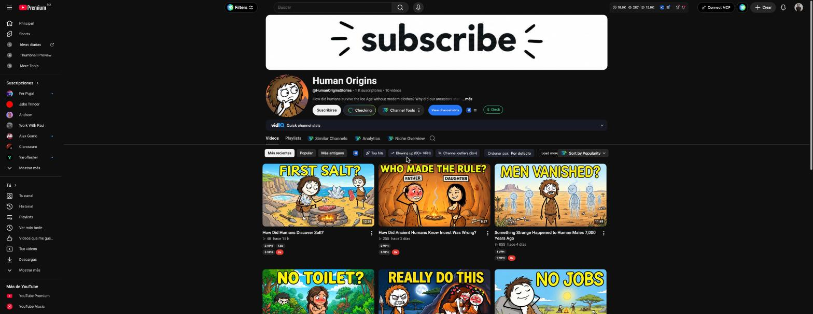
El guion lo escribió la IA (Claude) con este pedido, y después revisamos cada dato. Salieron 15 párrafos y 290 palabras, unos 2 minutos de voz. La regla que importa: cada párrafo es una idea que se puede dibujar.
Actuá como guionista de un canal faceless de YouTube de historia para curiosos, con un personaje dibujado que recorre cada época. Tema: ¿Cómo se lavaban los dientes los humanos antiguos? Duración: 2 minutos de locución (unas 290 palabras; calculá 145 por minuto). Idioma: español neutro. Protagonista: un chico prehistórico de palito, curioso, que viaja de hoy al pasado. Reglas: 1. La primera frase compara con algo que el espectador hace hoy. 2. La pregunta del título aparece antes de los 10 segundos. 3. Un dato sorprendente antes de los 15 segundos. 4. Cada dato real lleva lugar, antigüedad y fuente (estudio, revista, año). Si un dato está discutido, decilo. No inventes nada: si no estás seguro, no lo pongas. 5. Párrafos de 1 a 3 frases. Cada párrafo es UNA idea que se puede dibujar. 6. Nada de "en este video vamos a ver" ni pedidos de suscripción. 7. El cierre vuelve al presente y al protagonista. 8. Dejá marcados con [MI MIRADA] 2 o 3 lugares donde yo voy a agregar mi punto de vista: una opinión, una comparación con hoy o algo que me sorprendió. No los escribas vos. Devolveme: - El guion en párrafos separados por una línea en blanco, listo para leer en voz alta (números escritos con letras). - Abajo, la lista de fuentes con el dato que respalda cada una.
Si la IA no te da la fuente, el dato no entra.
No subas el guion tal como sale de la IA. Leelo, cambiá lo que no dirías vos y escribí tu propia mirada en los lugares marcados con [MI MIRADA]. Es lo que hace que el canal sea tuyo y no uno más con el mismo texto que cualquiera puede pedirle a la IA.
Además cuida la monetización: YouTube no paga por contenido inauténtico, hecho en serie y sin aporte propio. Tu punto de vista es ese aporte.
Con la locución grabada sabés cuánto dura cada párrafo, y eso te dice cuántas imágenes necesita: un párrafo de 9 segundos lleva 2 o 3; uno de 3 segundos, una sola. Por eso la voz va antes de dividir el guion en escenas.
Grabada con el teléfono y limpiada con Adobe Podcast. Es la opción más auténtica: tu voz y tu punto de vista hacen que el canal sea tuyo.
Elegila si querés empezar sin gastar y que el canal suene a vos.
La de mejor calidad en español y la más natural para narrar. Tiene una biblioteca enorme de voces, clonación de tu propia voz y control del tono.
Elegila si querés la mejor voz y una narración con tono de documental.
Muy buena calidad a menor precio, clonación de voz a partir de pocos segundos de audio y miles de voces públicas.
Elegila si vas a publicar seguido, en varios canales o idiomas.
Precios oficiales de ElevenLabs y Fish Audio consultados el 8 nov 2026, sin promociones (las dos tienen descuentos del primer mes o del primer año). El cupo gratis de Adobe Podcast puede cambiar: mirá el que te muestra tu cuenta. Para un canal que va a monetizar, usá un plan con licencia comercial.
Con el guion y la voz listos, armás al personaje. Si generás las escenas sin una hoja, cada imagen te inventa un personaje distinto. La hoja es una sola imagen con el personaje de frente, de tres cuartos, de perfil y de espaldas, más sus expresiones y poses. Después la adjuntás como referencia en cada escena.
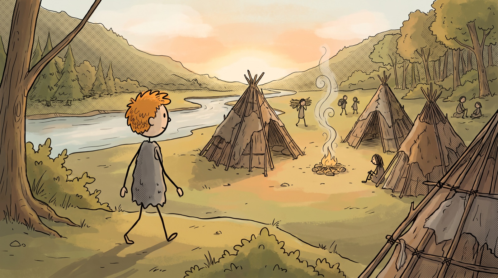
Sin hoja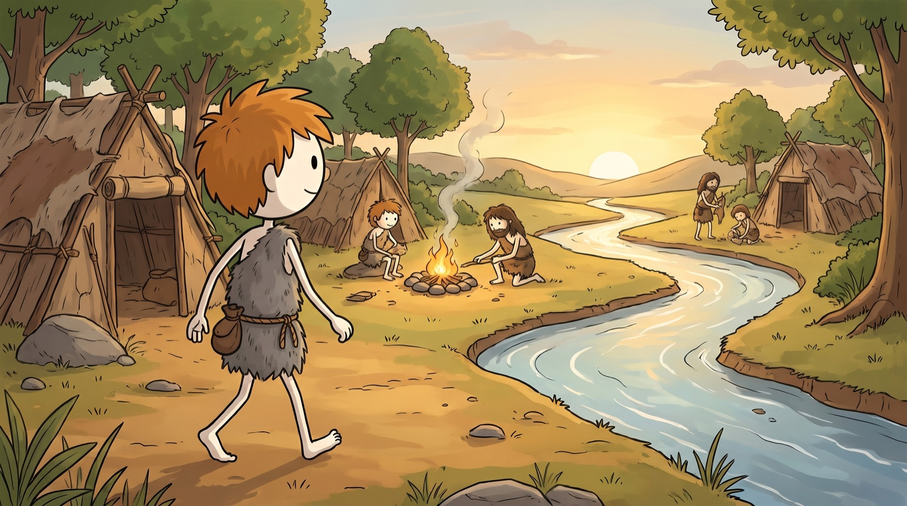
Con hojaA la izquierda, sin hoja: sale otro chico, con otro trazo, sin la bolsita y con los pies sin dedos. A la derecha, con la hoja adjunta: es el de la hoja.
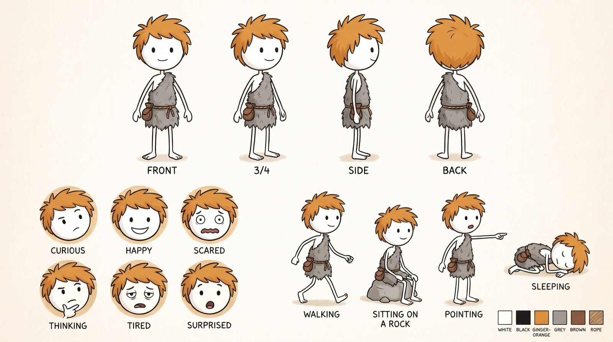
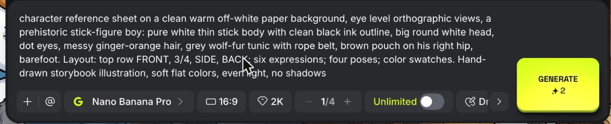
character reference sheet on a clean warm off-white paper background, eye level orthographic views, a prehistoric stick-figure boy for an educational cartoon: pure white thin stick body and limbs with clean black ink outline, big round white head, simple dot eyes and small curved mouth, messy spiky ginger-orange hair tuft, short grey wolf-fur tunic tied with a thin rope belt, small brown leather pouch at the hip, barefoot. Layout: top row four full-body turnaround views labeled FRONT, 3/4, SIDE, BACK; bottom left six head close-ups with expressions labeled curious, happy, scared, thinking, tired, surprised; bottom right four action poses: walking, sitting on a rock, pointing, sleeping; small color swatch strip of the palette. Hand-drawn storybook illustration style with clean black linework and soft flat colors, sharp even focus, soft even studio light without shadows, warm earthy palette of ochre, grey and ginger
Completá los campos y el prompt se arma solo. Sirve para un stickman o para cualquier personaje dibujado.
Si en tu historia aparecen otras personas seguido (el cazador, la curandera), hacé también una hoja para ellos. Así no salen como clones de tu protagonista (mirá el fallo 2) y se mantienen iguales en todo el episodio.
cast lineup reference sheet on a clean warm off-white paper background, eye level, three supporting characters for an educational cartoon standing side by side, each labeled with a name: GRANDMOTHER: an old prehistoric woman with long grey braids and a deer-hide cape; HUNTER: a tall bearded man with a spear and a bear-fur vest; HEALER: a thin woman with a bone necklace and a pouch of herbs. They are normal cartoon humans with skin tone and hair, NOT stick figures. Under each one, three small head close-ups: neutral, happy, angry. Hand-drawn storybook illustration style with clean black linework and soft flat colors, soft even studio light without shadows, warm earthy palette
Este paso es el que más tiempo te ahorra. Le pasás el guion a la IA y te devuelve la lista de escenas con el plano de cada una, ya escrita en inglés para pegar en el generador. La cuenta es simple: una imagen cada 3 a 5 segundos de voz. Un párrafo largo lleva 2 o 3 imágenes y uno corto, una.
Te paso el guion de un video faceless y la descripción de mi personaje. Dividilo en escenas para generar una imagen por escena. Personaje: a stick-figure boy (pure white stick body, big round white head, messy ginger-orange hair, grey wolf-fur tunic with rope belt, small brown pouch on his right hip) Duración real de la voz: 1:46 Ritmo: una imagen cada 3 a 5 segundos de locución (145 palabras = 1 minuto). Un párrafo largo lleva 2 o 3 escenas; uno corto, 1. Para cada escena escribí, EN INGLÉS y en este orden: encuadre (wide shot / medium shot / close-up / extreme close-up) + ángulo si hace falta + qué hace el personaje en UNA acción congelada + dónde está + la luz. Reglas: 1. Alterná los encuadres: nunca dos iguales seguidos. 2. El personaje aparece en la mayoría de las escenas, pero no en todas: también hay detalles y objetos en primer plano. 3. Si aparecen otras personas, describilas como adultos normales, NO como el personaje. 4. Si el guion habla de algo abstracto (bacterias, azúcar, una fecha), convertilo en una metáfora visual que se pueda dibujar. 5. Ninguna escena lleva texto ni letras. 6. No repitas el estilo de dibujo en cada escena: eso lo agrego yo después. Devolveme: A) Una tabla: ID (s01, s02…) | Párrafo (P1…) | Frase del guion donde entra la imagen | Escena en inglés. B) Las mismas escenas en un bloque de código, una por línea: s01 | P1 | escena en inglés GUION: [pegá acá tu guion, con los párrafos separados por una línea en blanco]
Tocá un párrafo para ver qué escenas salieron de él, el prompt de cada una y el momento exacto del episodio donde aparece.
Elegí un párrafo de la izquierda.
Al revisar la página nos dimos cuenta de que en la primera imagen (S01) la expresión del reflejo en el espejo no es la misma que la del chico. Aprendizaje: prestale atención a los detalles para un video de alta calidad. Tanto como para cambiar una imagen, no tanto como para frenar tu video.
Cada prompt de escena tiene 3 partes. La primera y la última son siempre iguales: describen al personaje y el estilo. Solo cambia la del medio, que es la escena que te dio la IA en el paso 4. Y en cada generación adjuntás la hoja como imagen de referencia.
«La imagen adjunta es solo una referencia», más el personaje descrito con sus rasgos únicos.
Encuadre, acción, lugar y luz. Sale del paso 4.
El dibujo, el fondo, la paleta y «no text, no letters».
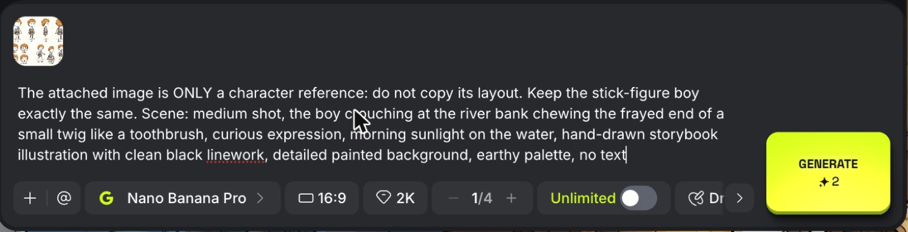
Son fallos reales del episodio. A la izquierda el fallo, a la derecha la imagen rehecha. Tocá una imagen para verla grande. Los tres arreglos ya están incluidos en la parte A del armador de arriba.
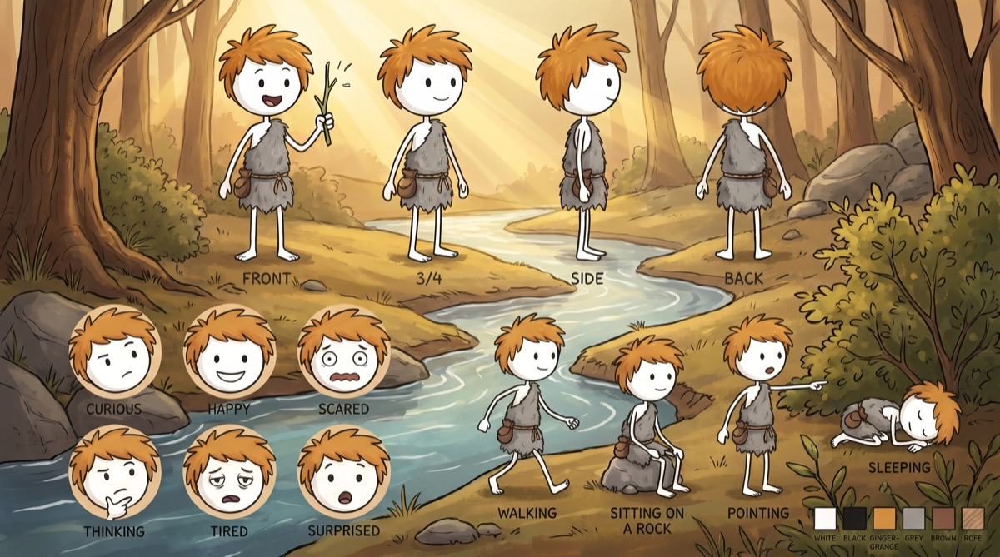
Fallo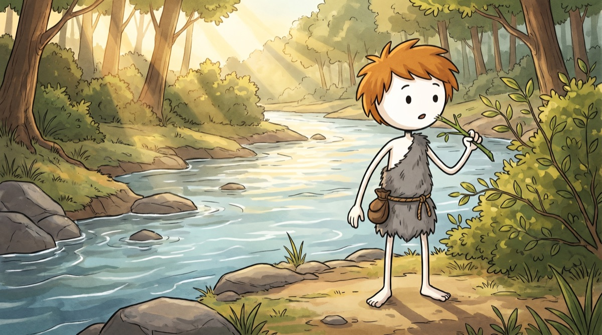
ArregloEl modelo pegó las vistas FRONT, 3/4 y SIDE, y los círculos de expresiones, dentro del dibujo. Pasó en la ramita, en las bacterias y en el baño.
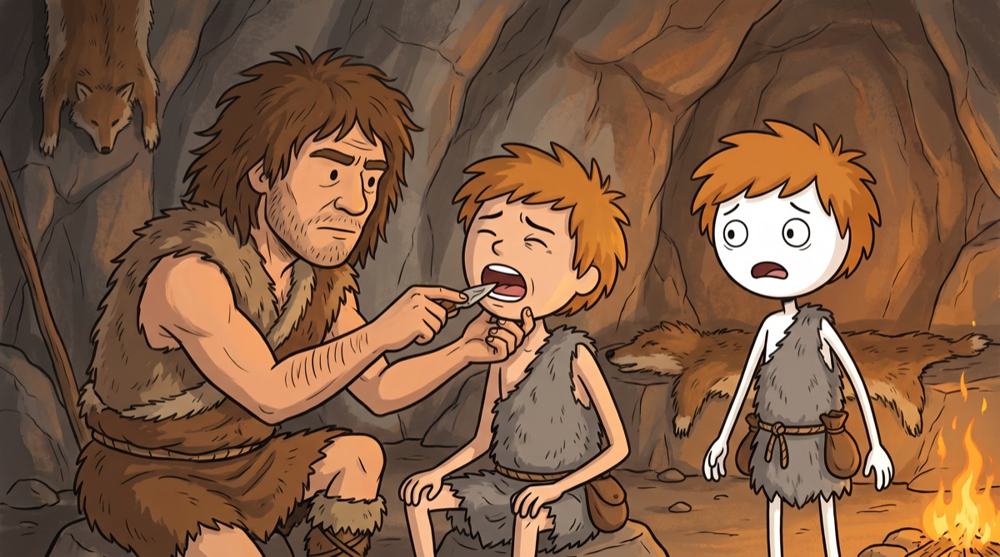
Fallo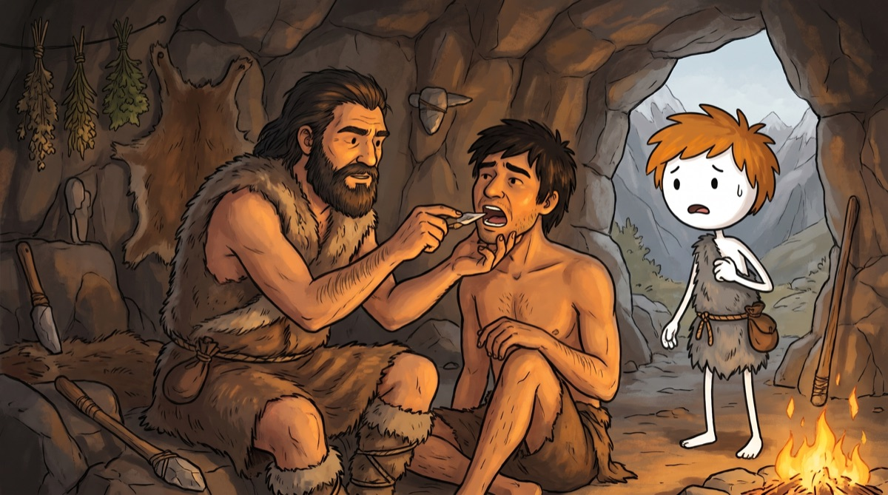
ArregloPedimos «un joven» como paciente y lo dibujó igual al chico, con el mismo pelo y la misma túnica. Con la hoja adjunta, cualquier persona tiende a parecerse al personaje.
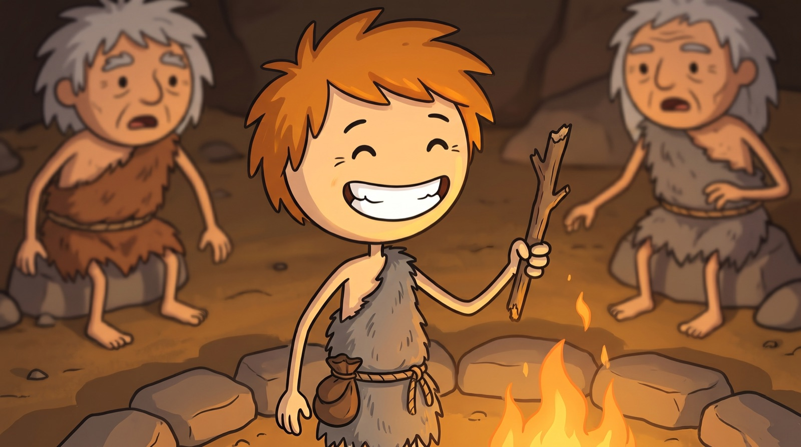
Fuego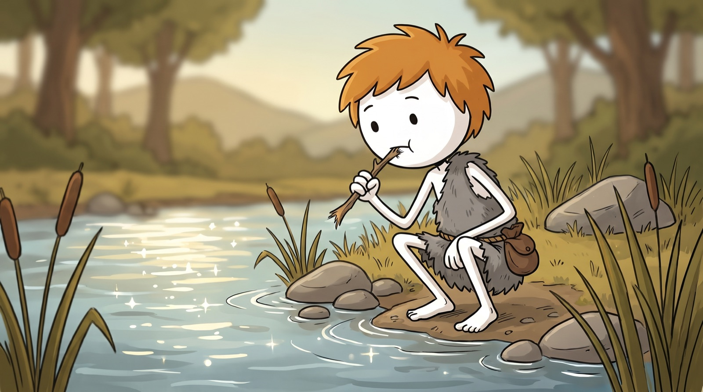
Luz de díaJunto al fuego, la cara blanca se volvió color piel y la bolsita pasó al frente. Las luces cálidas o de colores tiñen al personaje.
Te paso dos cosas: la transcripción de mi locución con el tiempo de cada frase y la lista de escenas (s01 | P1 | frase del guion | escena). Armame la lista de cortes para el editor: para cada escena, el segundo exacto en que empieza (el inicio de su frase en la transcripción) y un movimiento de cámara que no se repita con el plano anterior (acercar / alejar / paneo izquierda / paneo derecha / subir). Si una escena dura más de 6 segundos, avisame para partirla en dos. Devolvé una tabla: ID | entra en (s) | dura (s) | movimiento. TRANSCRIPCIÓN: [pegá la transcripción con tiempos] ESCENAS: [pegá la lista del paso 4]
Nosotros usamos Higgsfield con Nano Banana Pro, pero el método funciona en cualquier herramienta que acepte una imagen de referencia: subís la hoja y pegás el prompt A + B + C. Ordenamos las opciones de menor a mayor costo mensual. Precios oficiales consultados el 8 nov 2026, en dólares de EE. UU. En cada país pueden cambiar.
| # | Herramienta | Precio por mes | Qué te da para este trabajo | ¿Usa la hoja? |
|---|---|---|---|---|
| 1 | App de GeminiNano Banana | US$0 | Imágenes con cupo limitado que se va recargando. Google no publica un número fijo y lo cambia seguido. Alcanza para la hoja y unas cuantas escenas por día: el episodio sale en varios días. | Sí, adjuntás la imagen |
| 2 | ChatGPT Gratis | US$0 | «Creación limitada de imágenes». Sirve para probar la hoja y un par de escenas, no para un episodio entero. | Sí, adjuntás la imagen |
| 3 | Google Flow + plan Google AI PlusNano Banana dentro de Flow | ≈US$5–8 | Las imágenes no gastan créditos (lo medimos en nuestra clase de Flow, oct 2026). Los 200 créditos del plan quedan para video. Es la opción paga más barata para hacer el episodio entero. | Sí, como referencia de personaje |
| 4 | ChatGPT Go | US$8 | Más imágenes que el plan gratis, pero sin la generación de imágenes con razonamiento, que es la que mejor sigue instrucciones largas. | Sí |
| 5 | Midjourney Basic | US$10US$8 pagando el año | 3,3 horas rápidas por mes. La referencia de personaje se llama Omni Reference y el prompt cambia: la hoja va como referencia con --oref y su fuerza con --ow. No tiene plan gratis. | Sí, con Omni Reference |
| 6 | Leonardo Essential | US$12gratis: 150 tokens/día | 8.500 tokens rápidos por mes y más de 80 modelos. Tiene Character Reference. Con el plan gratis se puede probar, pero solo con el modelo automático. | Sí, Character Reference |
| 7 | Google AI ProGemini + Flow | ≈US$20 | Lo mismo que AI Plus con más cupo (1.000 créditos de Flow). Solo conviene si además vas a hacer mucho video. | Sí |
| 8 | Ideogram Plus | US$20US$15 pagando el año | 2.400 créditos prioritarios, créditos lentos ilimitados y consistencia de personaje ilimitada. | Sí, Character |
| 9 | ChatGPT Plus | US$20 | «Creación de imágenes más complejas y precisas», con razonamiento. Es la mejor opción de ChatGPT para seguir el prompt A + B + C al pie de la letra. | Sí |
| 10 | Higgsfieldlo que usamos: Nano Banana Pro | US$491.200 créditos | 2 créditos por imagen a 2K. Este episodio de 1:46 min costó US$2,77 (68 créditos), pero el plan sirve para muchos episodios más y trae todos los modelos de imagen y video en un mismo lugar. | Sí, imagen de referencia |
La referencia no usa al stickman en la miniatura: usa personajes cartoon a color y 3 palabras en amarillo grueso. Eso sí lo podés tomar. Lo que no te recomendamos copiar es su tema.
Nada de palabras como SEX u otras sexuales o morbosas en la miniatura ni en el título. El video más visto del canal de referencia puede ser motivo de rechazo de la monetización, por dos razones:
Que un video tenga 369 mil vistas no quiere decir que genere dinero: el canal todavía no está monetizado. La curiosidad tiene que salir del tema, no del morbo.
YouTube thumbnail, 16:9, bold colorful cartoon illustration: a prehistoric man with a shocked face holding a sharp flint stone next to an open mouth with a painful molar, warm cave background with firelight, big expressive faces, thick black outlines, saturated colors, strong contrast, simple composition with one clear focal point on the left, large bold yellow text with black outline on the right that reads "NO DENTISTS?", no other text
Tocá un tema y queda cargado en el prompt del guion (paso 1), listo para copiar. Todos son aptos para anunciantes: curiosos sin ser morbosos.